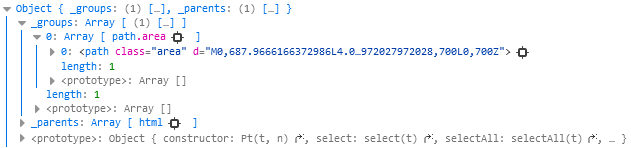

Mouse Events werden nur von Elementen ausgelöst die Pixel haben, wenn zwei Elemente übereinander liegen, wird nur das obige Element verändert.
Um dies zu vermeiden können SVG Elemente als eine Gruppe zusammengefasst werden.
Event Listener können auf eine Gruppe angewendet werden, jedoch reagieren dabei auch immer alle Elemente der Gruppe.
Interactivity
Für die Erstellung von Interaktivität bietet D3 die on() Methode an. Hierfür muss lediglich der Event Listener und das Verhalten definiert werden.
d3.select("p") //Select p element
.on("click", function() {
// Do something on click
});
D3 benutzt keine Costume Event Names, jedoch können eigene definiert werden. Zudem erkennt D3 alle Standard JavaScript Events wie 'Mouseover' oder 'Click'. Für eine Auflistung einiger Events bietet sich die Peter-Paul Koch Referenz an.
Um den Event Listener auf mehrere Objekte anzuwenden kann statt dem select("p") ein selectAll("rect") angewendet werden. Dabei können die Event Listener bei der Erstellung eines Elements direkt binden.
Hover to Highlight
Für das Highlighten eines Objektes, während der Mauszeiger sich über dieses befindet, muss anstelle des 'Click' Event das 'Mouseover' Event verwendet werden.
Damit die Funktion weiß welches Element gemeint ist, kann über select(this) der Kontext gegeben werden. Bei anonymen Funktionen referenziert D3 automatisch auf das Element, das gerade ausgewählt ist.
.on("mouseover", function() {
d3.select(this)
.attr("fill", "orange");
});
Um das Objekt nach dem 'Mouseover' wieder zu ändern, muss mithilfe von 'Mouseout' das Verlassen des Objektbereiches getrackt werden. Für weiche Übergänge zwischen dem 'Mouseover' und 'Mouseout' können die Keyworter transition() und duration() verwendet werden.
.on("mouseout", function(d) {
d3.select(this)
.attr("fill", "blue");
});
Click to Sort
Für die Sortierung der dargestellten Daten bietet D3 die sort() Methode an. Dabei können die Daten entweder aufsteigend (ascending) oder absteigend (descending) sortiert werden.
var sortBars = function() {
svg.selectAll("rect") // Select the elements to compare
.sort(function(a, b) { // calling the sort function, where element a and b getting compared (D3 does this for all the selected elements)
return d3.ascending(a, b); // sorting the elements in ascending order
})
.transition() // adding a transition to the movement of the rects
.duration(1000) // setting a duration for the transition
.attr("x", function(d, i) {
return xScale(i);
});
};
Tooltips
Die Erstellung eines Tooltips erfolgt mithilfe von den 'Mouseover', 'Mousemove' und 'Mouseout' Events. Für SVG Element Tooltips und Html Div Tooltips muss zunächst die Position bestimmt werden, an der der Tooltip angezeigt werden soll. Anschließend muss das Aussehen des Tooltips definiert werden. Dies kann entweder direkt in JavaScript oder in CSS festgelegt werden.
SVG Element Tooltips werden dabei auf dem ausgewählten Element ausgeführt.
.on("mouseover", function(d) {
var xPosition = parseFloat(d3.select(this).attr("x")) + xScale.bandwith() / 2; // getting the xPosition where the tooltip should be placed
var yPosition = parseFloat(d3.select(this).attr("x")) / 2 + h / 2; // getting the yPosition where the tooltip should be placed
svg.append("text") // creating a text element to show as a tooltip
.attr("id", "tooltip")
.attr("x", xPosition)
.attr("y", yPosition)
.attr("text-anchor", "middle")
.attr("font-family", "sans-serif")
.attr("font-size", "11px")
.attr("font-weigt", "bold")
.attr("fill", "black")
.text(d);
})
HTML Div Tooltips bieten sich an, wenn Visualisierung implementiert werden soll, die nicht oder nur schlecht mit SVG umsetzbar sind. Bei den HTML Div Tooltip wird ein extra Div angelegt, dass beim aufrufen ausgeführt wird.
.on("mouseover", function(d) {
var xPosition = parseFloat(d3.select(this).attr("x")) + xScale.bandwith() / 2; // getting the xPosition where the tooltip should be placed
var yPosition = parseFloat(d3.select(this).attr("x")) / 2 + h / 2; // getting the yPosition where the tooltip should be placed
d3.select("#tooltip") // selecting the definied tooltip from html and update position
.style("left", xPosition + "px")
.style("top", yPosition + "px")
.select("#value") // select the text field value from the html
.text(d); // adding the value
d3.select("#tooltip").classed("hidden", false); // change the visibility to true
})
Touch Devices
D3 Mouse Events funktionieren auf Touch Devices - wie iOS und Android - automatisch. Dabei wird eine Berührung wie ein Mouse Click gewertet. Mouse Hover Events können auf Touch Devices nicht ausgelöst werden. Außerdem werden multitouch nicht automatisch von D3 verarbeitet, jedoch werden diese von D3 getrackt.
Paths
Das SVG-Path Element wird verwendet um verschiedene komplexere Formen zu erstellen.
Dafür werden mehrere Linien oder Kurven miteinander kombiniert.
Beispiel Quadrat
<svg width="200" height="300">
<path d="M10 10 L 90 10 L 90 90 L 10 90 L 10 10" fill="transparent" stroke="black"/>
</svg>
Bei zunehmender Komplexität, wird diese Syntax jedoch immer unleserlicher und ein manuelles Erstellen von Paths,
welche zum Beispiel eine Line Chart darstellen, ist nahezu unmöglich.
D3Js bietet zum erstellen von Paths verschiedene Funktionen.
Für uns sind dabei vorallem die Funktionen d3.line() sowie d3.area() interessant.
Die ermölichen uns das erstellen von Line und Area Charts.
Line Charts
Die Funktion d3.line() erstellt uns eine Line generator function.
Die so erzeugte Paths folgt einer Reihe von (Koordinaten-)Punkten und verbindet diese mit einer Linie.
Den beiden .x und .y - Accessoren könen wir unsere Datenwerte "übergeben". Im Beispiel werden diese mittels einer Scalefunktion noch skaliert.
var lineFunc = d3.line()
.x(function(d, i) { return xScale(d.time); })
.y(function(d) { return yScale(d.value); });
var svg = d3.select("#graphdiv").append("svg")
.attr("width", WIDTH)
.attr("height", HEIGHT)
.append("g");
svg.append("path")
.datum(DATA)
.attr("class", "line")
.attr("d", lineFunc);
Area Charts
Die Funktion d3.area() erstellt uns analog zur "line" funktionen eine area generator function.
Bei diesen kommt zusätzlich noch eine Basislinie hinzu. Die Fläche zwischen der Basislinie (y=0) und der Linie der Datenpunkte wird dann gefüllt.
Bei D3js spiegelt sich das so wieder, dass es anstatt einen .y Accessor, einen .y1 und .y2 Accessor gibt. Ersterem ordnet man dabei der Basislinie zu, während zweiterem wieder die Y-Werte der
Darten zugeordnet werden.
var areaFunc = d3.area()
.x(function(d) { return xScale(d.time); })
.y0(function() { return yScale.range()[0]; })
.y1(function(d) { return yScale(d.value); });
var svg = d3.select("#test_graph2").append("svg")
.attr("width", WIDTH)
.attr("height", HEIGHT)
.append("g");
svg.append("path")
.datum(TUT_DATA)
.attr("class", "area")
.attr("d", areaFunc);
Selections
Selektionen sind Javascript Objekte die Referenzen auf Elemente behalten. Sie werden von D3 generiert und interpretiert.
Guckt man sich beispielsweise den Rückgabewert des folgenden Codes an, sieht man wie diese Selektions-Objekte aufgebaut sind:
console.log(svgAreaChart.select("path"))
Der Output dieses Logs sieht folgendermaßen aus:
{kind=link}
In dem Objekt sind 3 Referenzen: _groups, _parents und prototype. Für den Nutzer ist im Grunde nur das _groups-Objekt relevant. Dieses beinhaltet die eigentlichen Referenzen, in diesem Fall das path-Objekt das mittels des Codes selektiert wurde.
Chaining
Wie bereits in vielen Beispielen auch aus anderen Themen gezeigt, werden Selektionen häufig in Ketten (english. Chains) aufgerufen. Dementsprechend beziehen sich die Funktionen nur auf die vorhergegangene Selektionen. Somit können Elemente und ihre Subelemente entsprechend modifiziert werden.
d3.select("svg") //Select the first SVG on the page
.attr("width", 500) //Set its width
.attr("height", 300) //Set its height
.selectAll("circle") //Select all circles *within* that SVG
.attr("cx", 250) //Set each circle’s cx attribute
.attr("cy", 150) //Set each circle’s cy attribute
Anzumerken ist, dass viele Funktionen die Selektion intakt lassen. So ändert sich die Selektion durch die Funktion .attr beispielsweise nicht. Andere Funktionen hingegen verändern die Auswahl aktiv, ein gutes Beispiel hierfür ist die Funktion .append, die die aktive Auswahl durch die angehängten Elemente ersetzt.
d3.select("body") // New selection
.append("svg") // New selection
.attr("width", 960) // Acts on svg
.attr("height", 500) // Acts on svg
.append("g") // New selection
.attr("transform", "translate(20,20)") // Acts on g
Natürlich lassen sich Selektionen auch zwischenspeichern, somit ist folgender Code funktional identisch, es wird lediglich eine Referenz zu der Selektion gespeichert:
var g = d3.select("body") // New selection
.append("svg") // New selection
.attr("width", 960) // Acts on svg
.attr("height", 500) // Acts on svg
.append("g") // New selection
g.attr("transform", "translate(20,20)") // Acts on g
Enter, Merge & Exit
Enter, Merge und Exit sind drei essentielle Funktionen die es zu verstehen gilt, wenn über Selektionen gesprochen wird. Alle drei dieser Funktionen geben Selektionen zurück, allerdings nicht wie andere Elemente. Sie sind dazu gedacht häufige Sonderfälle abzudecken.
Enter-Selektion
Die Enter-Selektion wird häufig genutzt um neue Elemente zu generieren. Sie wird von D3 generiert, wenn Daten an eine Selektion gebunden werden. Hier erstellt D3 für jeden Datenpunkt der kein representatives Element im DOM hat ein Platzhalter-Element. Diese Elemente werden dann in der Enter-Selektion zusammengefasst.
//Create bars
svg.selectAll("rect") // Returns empty selection since no rect exist yet
.data(dataset, key) // Binds data to the empty selection
.enter() // Returns a selection of placeholder elements (one for each data point)
.append("rect") // Creates a rect for each placeholder element in the enter selection
Anschließend können diese Platzhalter-Elemente durch .append mit richtigen Elementen ersetzt werden.
Merge-Selektion
Wenn sich ein Datensatz dynamisch verändert, müssen einzelne Elemente generiert und in die Selektion der bestehenden Elemente eingefügt werden. Hierfür dient die Merge-Selektion. Die länge der Enter-Selektion wird vergrößert wenn ein Element dem Datensatz hinzugefügt wird, auch wenn die Selektion nur die neuen Elemente beinhaltet.
Die Merge-Selektion wird auf eine Selektion angewandt und erwartet eine weitere Selektion als Parameter. Anschließend gibt sie eine neue Selektion die alle Elemente beinhaltet zurück.
//Add new elements
bars.enter() // Enter-selection with new placeholder elements
.append("rect") // Again a *new* selection containing ONLY the new elements
.merge(bars) // Merges the elements with the old "bars"-selection
Exit-Selektion
In dem Fall, dass der Datensatz weniger Datenpunkte enthält als DOM-Elemente werden die jeweiligen überflüssigen Elemente der Exit-Selektion hinzugefügt. Dementsprechend ist die Exit-Selektion in den meisten Fällen leer und enthält nur Elemente wenn beispielsweise Werte gelöscht werden.
In diesem Fall werden die entsprechenden Elemente einfach entfernt. Anzumerken ist, dass die Funktion dennoch eine Selektion der gelöschten Elemente zurückgibt, es also möglich ist die Elemente noch weiter zu verarbeiten, also beispielsweise zu Speichern o.Ä. .
//Remove Elements
bars.exit() // Returns selection of all exiting elements
.remove() // Removes contained elements
Filtering
Wann immer Daten visualisiert werden sollen ist es wichtig, in der Lage zu sein einen spezifischen Bereich der Daten auswählen zu können. Im folgenden Beispiel wir das Farbattribut mittels einer Funktion ermittelt; nur Elemente die einen gebundenen Datentyp über 15 haben, werden Rot gefärbt.
var dataset = [ 5, 10, 15, 20, 25 ];
d3.select("body").selectAll("p")
.data(dataset)
.enter()
.append("p")
.text(function(d) {
return "I can count up to " + d;
})
.style("color", function(d) {
if (d > 15) { //Threshold of 15
return "red";
} else {
return "black";
}
});
Dieses Beispiel funktioniert zwar, ist allerdings undynamisch, da die Selektion nicht verändert wird. Es ist also nicht möglich mehrere Attribute zu modifizieren oder die ausgewählten Elemente zu speichern. Zu diesem Zweck bietet D3 eine .filter-Funktion. Diese filtert eine Selektion und gibt das Ergebnis als neue Selektion zurück. Zusätzlich dazu ist nun die Logik des Codes sinnvoll ausgelagert, da bei gutem Stil die .style-Funktion nicht darüber entscheiden sollte was, sondern lediglich wie, gestyled wird.
d3.select("body").selectAll("p")
.data(dataset)
.enter()
.append("p")
.text(function(d) {
return "I can count up to " + d;
})
.filter(function(d) { //Filter current selection of all paragraphs
return d > 15; //Returns true only if d > 15
}) //New selection of filtered elements is handed off here
.style("color", "red"); //Applies only to elements in the filtered selection
Natürlich kann eine solche Selektion auch gespeichert werden:
var allParas = d3.select("body").selectAll("p")
.data(dataset)
.enter()
.append("p")
.text(function(d) {
return "I can count up to " + d;
});
var redParas = allParas.filter(function(d) {
return d > 15;
})
.style("color", "red");
Each-Funktion
Als letzte essentielle Funktion gibt es noch die .each-Funktion. Diese führt einen Befehl für jedes Element einer Selektion seperat aus. Damit können Elemente unabhängig voneinander modifiziert werden.
selection.each(function(d, i) {
//The 'this' context is now set to
//the element on which you’re acting.
//
//Do something with 'this', d, and/or i here.
});
Die Werte für d und i (also den Datenwert und der Zähler) werden hierbei von D3 automatisch mit den entsprechenden Daten aufgefüllt.